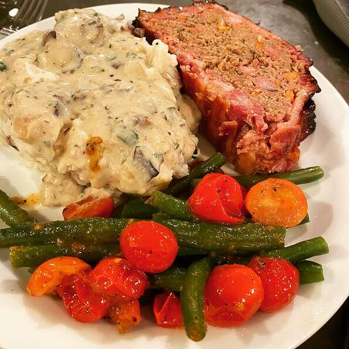

MeatLoaf

Nutrition facts
Per Serving: 395 calories; protein 34.3g; carbohydrates 14.9g; fat 21.6g; cholesterol 165.3mg; sodium 859.2mg. Full Nutrition
Ingredients
- 2 pounds lean ground beef
- ½ cup crushed saltine crackers
- salt and pepper to taste
- 2 tablespoons finely chopped green bell pepper
- 2 tablespoons light corn syrup
- 2 eggs, beaten
Directions
- Preheat an oven to 350 degrees F (175 degrees C).
- Combine ground beef, cracker crumbs, tomato sauce, eggs, onion, bell pepper, salt, thyme, and marjoram in a large bowl and mix well. Shape beef mixture into two equally sized loaves. Place both loaves in a 9x13 inch baking dish. Cover with foil and bake in the preheated oven for 1 hour. Meanwhile, mix ketchup and corn syrup in a small bowl to make a glaze.
- Remove baking dish from the oven and remove foil. Brush glaze onto the loaves. Return baking dish to the oven uncovered, and continue baking until loaves are no longer pink in the center, 15 to 20 minutes. An instant-read thermometer inserted into the center should read at least 160 degrees F (70 degrees C).
Go back to main